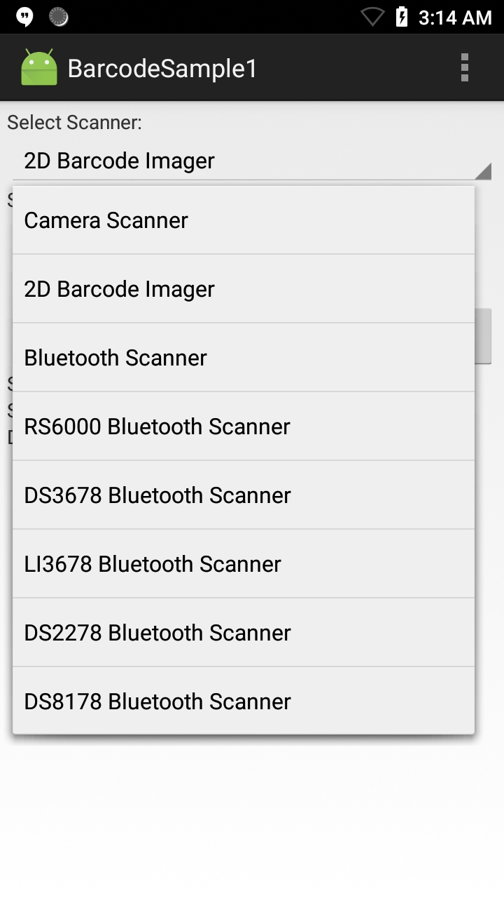

Requirements
- Android Studio on a Mac or Windows PC with Android API 22 (or higher) installed
- Two (2) Zebra Android devices, at least one of which is among the supported devices
- A barcode that contains the Bluetooth MAC address of the second Zebra device (to pair with)
Using Sample App
NOTE: The appearance of sample app screens can vary by sample app version, Android version and screen size.
Before beginning, download, build and install the sample app. For help, please see the Sample App Set-up Guide.
When the application starts it should look similar to the image below:

Select a scanner to use. If the desired scanner is external to the mobile device (Bluetooth or wired), be sure it's connected and in "SSI" mode before making a selection.

Point the device at a barcode and press the scan trigger. The app displays the scanned barcode data similar to the image below:

-->NOTE: Sample apps are for demonstration purposes only and should not be used in production environments.